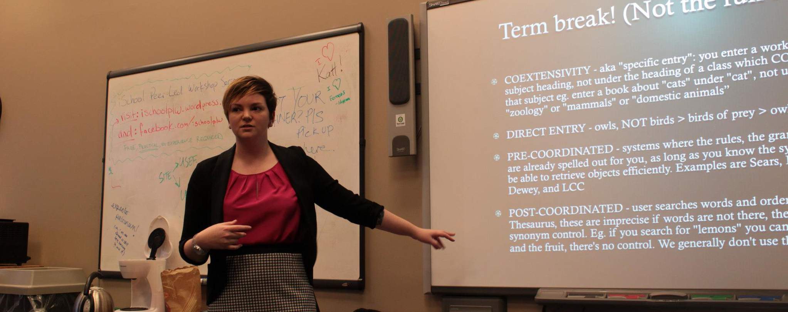

Work Experience
Research Assistant
Boost Agents
Nov. 2013 - Apr. 2014
Cataloguer
University of Toronto Mississauga Library
Aug. 2013 - Nov. 2013
Graduate Student Reference Assistant
University of Toronto
Sept. 2012 - May 2013
Prospect Researcher (contract position)
MaRS Discovery District
Apr. 2013
Intern, Prospect Research
MaRS Discovery District
Jan. 2013 - Apr. 2013
Intern, Knowledge Management
Lord Cultural Resources
Sept. 2012 - Dec. 2012
Interlibrary Loans Student Assistant
University of Toronto Mississauga
Sept. 2011 - Sept. 2012
Volunteering
Session Staff Chair
PyCon 2014
Apr. 2014
Organizer, Startup Weekend: Library Edition
Toronto, Ontario
Oct. 2013 - May 2014
New Information Professionals Program Coordinator
Special Libraries Association
Oct. 2013 - Present
Social Media
Faculty of Information Alumni Association
Jan. 2014 - Present
Head of Session Staff
PyCon Canada
Aug. 2013
Social Media
EdTech Workshop 2014 (Toronto)
May 2013
Education
HackerYou
Front End Web Development Immersive
April-June 2014
University of Toronto
Master of Information, Library and Information Science
2011-2013
University of Toronto
Honours Bachelor of Arts, Fine Art History
2006-2011